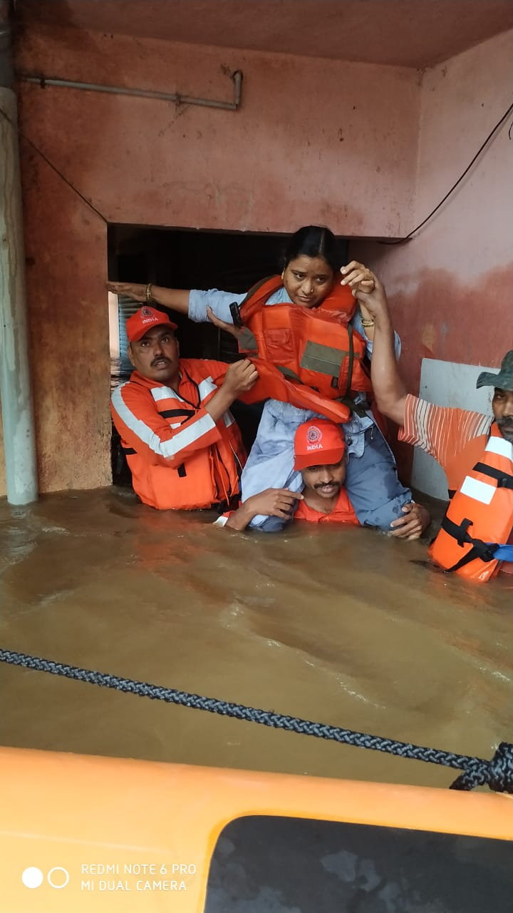

Our Goal: A Safer Community
MissionGeoNetra connects citizens and authorities through real-time hazard monitoring, rapid reporting, and community advisories so everyone can act quickly when it matters most.
GeoNetra brings together live alerts, citizen reporting, and map-based hazard tracking for floods, storms, fires, landslides, earthquakes, pollution incidents, and more so residents and responders can act with clarity when conditions change.
GeoNetra connects citizens and authorities through real-time hazard monitoring, rapid reporting, and community advisories so everyone can act quickly when it matters most.
Zoom into active hotspots and reported incidents.
Use the live map to review active markers, inspect reports, and monitor new hazard activity in real time.
Real accounts of courage, preparedness, and community action during emergencies.

Aug 2019During the 2019 floods, NDRF teams navigated violent currents to rescue thousands from submerged homes, proving that hope and coordination can outlast panic.
 May 2020
May 2020
Fishermen, local volunteers, and shelters worked together to evacuate vulnerable families before the cyclone hit, turning early action into saved lives.
 Dec 2023
Dec 2023
Volunteers transformed a school into a 24/7 emergency kitchen, producing thousands of meals daily for stranded residents and response crews.